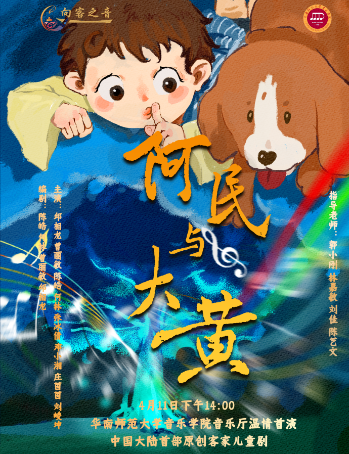

《阿民与大黄》
剧情简介
《阿民与大黄》是中国大陆首部客家儿童音乐剧，流淌着客家温情与童真，讲述了一个客家村庄里小男孩阿民与大黄狗之间感人至深的故事。
在遥远的客家山庄，那年的意外成为了阿民与阿诚兄弟俩心中无法磨灭的伤疤。然而在十年后的一天，家犬大黄的变化，十年难遇的大雨，宿命般的轮回却再次上演……
该剧融合了传统客家山歌与现代音乐元素，通过儿童的视角，展现了客家文化中"重情重义、坚韧不拔"的精神内核。剧中大黄由真人扮演，通过精湛的表演与阿民互动，带给观众既真实又富有想象力的艺术体验。